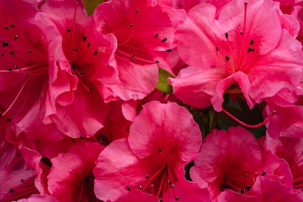

AZALEIA

O que é?
A Azaleia é um arbusto de floração persistente e muito resistente, pertencente ao gênero Rhododendron. Elas são as queridinhas dos jardins brasileiros devido à sua facilidade de cultivo e à explosão de flores que ocorre principalmente nos meses de inverno e primavera. Simbolizam a elegância e o amor à natureza.
Como cuidar?
Embora sejam rústicas, as azaleias florescem muito melhor com estes cuidados:
- Luz: Elas amam sol! Devem ser cultivadas em pleno sol para garantir uma floração cheia, embora tolerem meia-sombra em regiões muito quentes.
- Solo: Preferem solos levemente ácidos e bem drenados. Evite solos que acumulam muita água, o que pode causar fungos.
- Rega: Mantenha o solo úmido, mas nunca encharcado. Reduza as regas quando os botões começarem a abrir.
- Poda: A poda deve ser feita logo após o término da floração para dar formato ao arbusto e preparar a planta para o próximo ano.
Curiosidades
- Cidade das Flores: A azaleia é a flor símbolo da cidade de São Paulo, decorando muitos dos parques e avenidas da capital.
- Tóxica para Pets: Assim como os lírios, as azaleias são tóxicas se ingeridas por cães e gatos, por isso atenção ao local de plantio.
- Variedade de Cores: Além do rosa clássico, existem variedades brancas, vermelhas, roxas e até mescladas.
- Longevidade: Se bem cuidada e podada, uma azaleia pode viver décadas e se tornar um arbusto de grande porte.